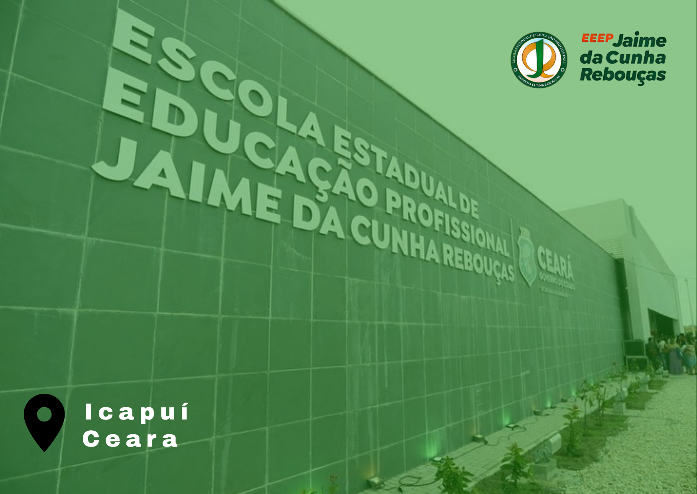
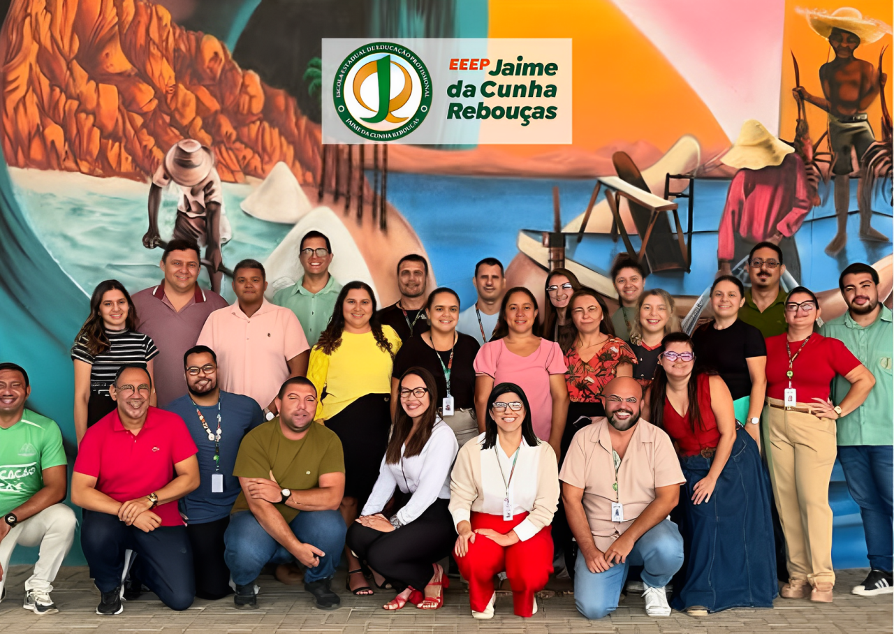

INSTITUIÇÃO

Inaugurada há três anos, a Escola Estadual de Educação Profissional (EEEP)
Jaime da Cunha Rebouças vem transformando a realidade educacional de Icapuí.
Localizada no litoral leste do Ceará, a instituição representa um marco no ensino
público da região, oferecendo aos jovens do município novas oportunidades de formação
técnica e acadêmica.
PROFESSORES/FUNCIONÁRIOS

Nossa escola tem o prazer de contar com o apoio e trabalho de profissionais excelentes
e que sempre se dedicam ao máximo pela escola e pelos alunos.